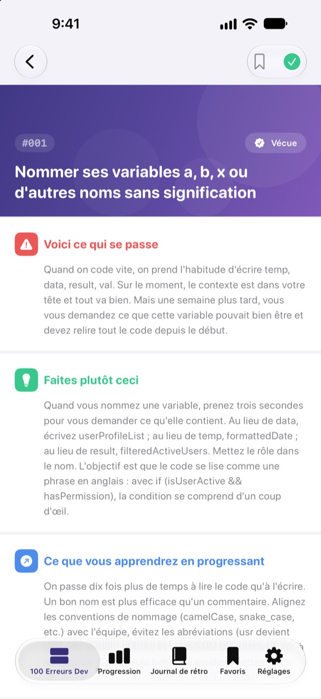
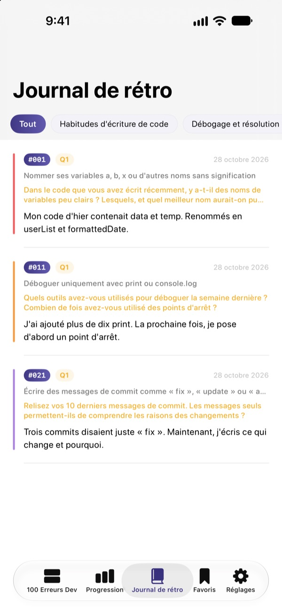
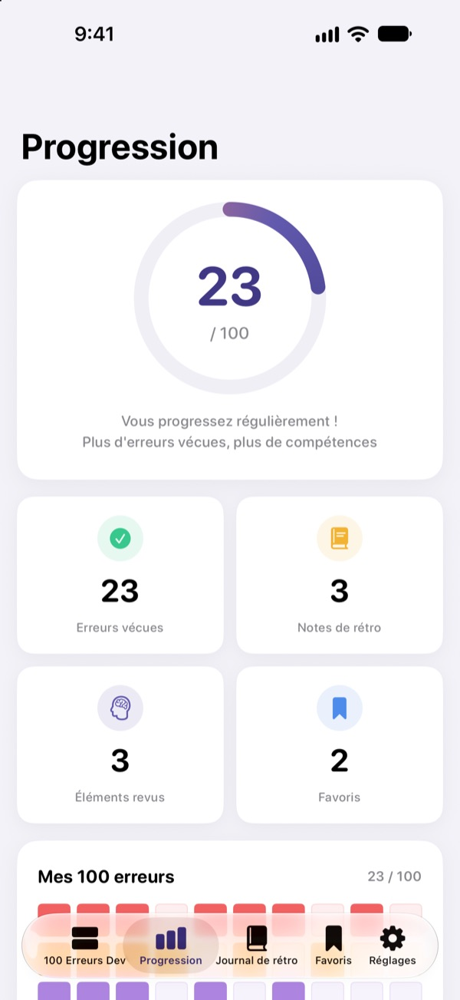

Connaître les erreurs
avant qu’elles ne coûtent
Les 100 erreurs que font le plus souvent les développeurs juniors, réunies au même endroit. Pour chacune : ce qui se passe, quoi faire et ce que vous en retenez. Répondez ensuite à une question de rétro pour ne pas refaire la même erreur.
Les 30 premières erreurs sont gratuites. Sur iPhone, iPad et Mac.
Ouvrez une erreur
Voici les 10 erreurs de la première catégorie gratuite, mot pour mot comme dans l’app. Marquez comme Vécue celles qui vous sont déjà arrivées.
Encore la même remarque en revue de code ?
Des noms de variables obscurs, des fonctions de 200 lignes, du copier-coller. Tous les seniors sont passés par là, mais on ne le découvre souvent qu’en tombant dedans. 100 Erreurs Dev vous montre ces erreurs à l’avance et vous fait réfléchir à votre propre travail pour ne pas les répéter.
Ce qui se passe, quoi faire, ce qu’on en retient
Chaque erreur est expliquée en trois parties : ce qui se passe, quoi faire et ce que vous en apprendrez.
Dix catégories, des habitudes d’écriture de code à la sécurité et aux performances, avec uniquement les erreurs qui reviennent sans cesse dans les vraies équipes.

Des questions de rétro pour que ça reste
Chaque erreur s’accompagne de 4 questions de rétro, 400 au total. Répondez en pensant à vos projets, et ce que vous lisez devient de l’expérience.
Vos réponses sont rangées par catégorie dans le journal de rétro, à relire quand vous voulez.

Voyez le chemin parcouru
Cochez les erreurs que vous avez vécues : votre progression s’affiche par catégorie et au total. Ajoutez un signet à ce que vous voulez revoir.
Tout se synchronise via iCloud entre iPhone, iPad et Mac.

Trois étapes pour commencer
- 1
Choisissez une catégorie
Habitudes d’écriture de code, débogage et gestion de versions sont ouverts gratuitement.
- 2
Lisez et cochez
Touchez Vécue sur les erreurs que vous avez déjà faites.
- 3
Faites votre rétro
Notez une réponse, même courte. Elle rejoint votre journal de rétro.
Les 10 catégories
- Habitudes d'écriture de code
- #001–#010 · Gratuit
- Débogage et résolution de problèmes
- #011–#020 · Gratuit
- Gestion de versions et collaboration
- #021–#030 · Gratuit
- Conception et architecture
- #031–#040 · PRO
- Tests et qualité
- #041–#050 · PRO
- Apprentissage et progression
- #051–#060 · PRO
- Communication et collaboration
- #061–#070 · PRO
- Déploiement et exploitation
- #071–#080 · PRO
- Sécurité et données
- #081–#090 · PRO
- Performance et optimisation
- #091–#100 · PRO
Chaque catégorie compte 10 erreurs, et chaque erreur 4 questions de rétro.
30 gratuites. Les 100 avec PRO.
Gratuit
- Les 3 premières catégories, 30 erreurs
- Leurs 120 questions de rétro
- Checklist, journal de rétro, progression et signets
- Synchronisation iCloud (iPhone, iPad, Mac)
100 Erreurs Dev PRO
- Les 7 autres catégories, 70 erreurs de plus (#031–#100)
- 280 questions de rétro en plus
- Toutes les futures mises à jour de contenu
Abonnement mensuel, annuel (jusqu’à 50 % moins cher que le mensuel) ou achat unique à vie.
Aucune donnée personnelle collectée, ni outil d’analyse, ni publicité.
Questions fréquentes
Qu’est-ce qui est gratuit ?
Les 30 erreurs et leurs questions des catégories Habitudes d’écriture de code, Débogage et résolution de problèmes, et Gestion de versions et collaboration. La checklist, le journal de rétro, la progression, les signets et la synchronisation iCloud sont aussi gratuits.
Comment utiliser PRO sur un autre appareil ?
Connectez-vous avec le même identifiant Apple, puis touchez Restaurer les achats sur l’écran d’abonnement.
Comment résilier l’abonnement ?
À tout moment dans Réglages › identifiant Apple › Abonnements. L’abonnement se renouvelle automatiquement sauf résiliation au moins 24 heures avant la fin de la période en cours. L’achat à vie se paie une seule fois.
Mes données ne se synchronisent pas entre mes appareils.
Vérifiez que tous vos appareils sont connectés à iCloud avec le même identifiant Apple et qu’iCloud est activé pour cette app dans Réglages. La synchronisation nécessite aussi une connexion réseau.
Comment tout effacer ?
Touchez Réinitialiser toutes les données dans les réglages de l’app. Coches, réponses et signets sont supprimés, sans retour possible.
Sur quels appareils fonctionne-t-elle ?
iPhone, iPad et Mac. PRO est débloqué sur tous les appareils utilisant le même identifiant Apple.
Mes données sont-elles envoyées quelque part ?
Non. Vos coches et réponses restent uniquement sur vos appareils et dans votre propre iCloud. L’app ne collecte aucune donnée personnelle et n’a ni outil d’analyse ni publicité.
Une question ou une suggestion ? Écrivez à leeo@kakao.com.